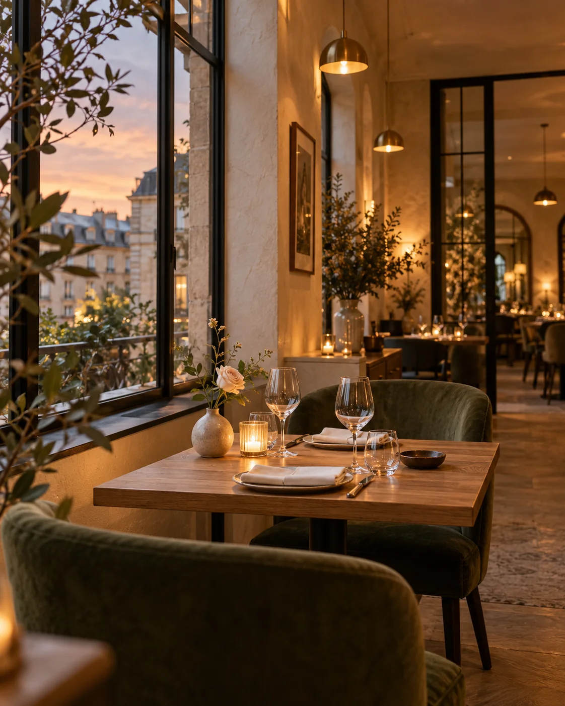
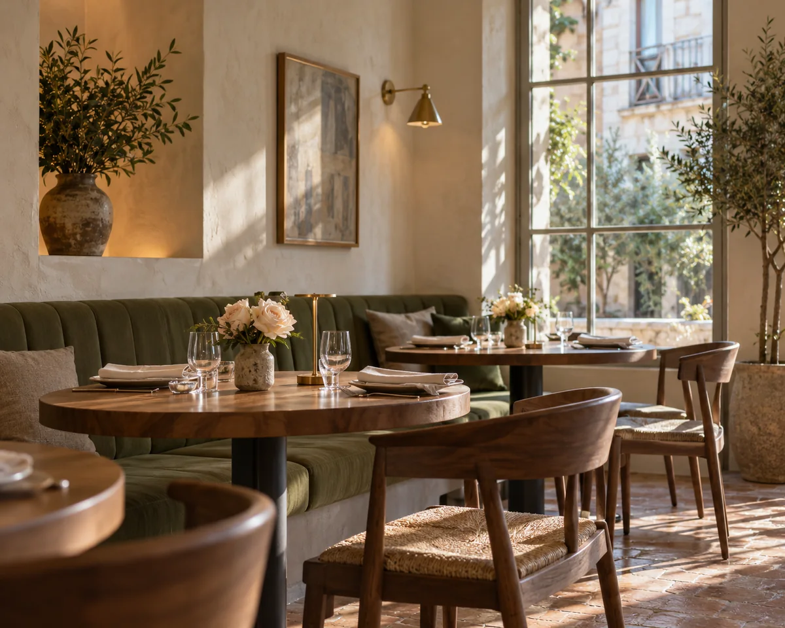

Москва · городское бистро
У каждого вечера
есть свой вкус.
Сезонные продукты, открытый огонь и радость быть вместе. Приходите за вкусом. Оставайтесь ради атмосферы.


01 / О нашем месте
Чуть ближе
к простым радостям.
Мы придумали Розалию как место, куда можно прийти без повода. На обед после долгой прогулки, на свидание или на ужин, который незаметно превращается в целый вечер.
В центре нашей кухни — сезон. Мы бережно соединяем знакомые продукты с новыми вкусами, оставляя главное: удовольствие от хорошей еды.
02 / На вкус — осень
Знакомое.
По-новому.
Загружаем сезонное меню…
03 / Повод встретиться
Больше,
чем ужин.
Джаз по вечерам, разговоры о еде и ужины с особым настроением. Выберите свой повод заглянуть к нам.
Вся афишаЗагружаем афишу…
Будем рады встрече
Ваш стол уже ждёт.
Тихий уголок для двоих или большой стол для своих — расскажите, какой вечер вы задумали.